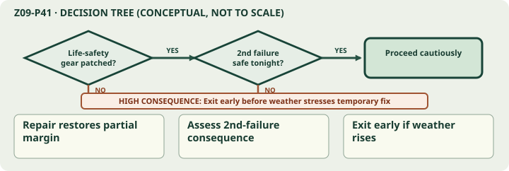

Z09-P41 · Tools and construction · New manuscript
Recognize temporary-repair limits before continuing into harsh weather
Decide honestly when a field repair is good enough to finish safely versus when it requires turning back immediately.
When it applies · Evaluating splinted tent poles, taped boots, patched sleeping pads or knotted pack straps mid-trip.
Equipment · Honest route/weather assessment, map of nearest bailout exits and group condition check.

Actions
- Treat EVERY field patch, pole splint, taped boot sole or knotted strap as a degraded temporary fix with lower strength and shorter service life than intact factory gear.[K07, E20, ED]
- Evaluate the consequence of a second failure: a patched jacket pocket is trivial, whereas a splinted tent pole ahead of a forecast windstorm or a leaking pad before a 10°F night threatens life safety.[K07, E16, E05]
- Shorten the trip or exit via the nearest verified safe route whenever a core shelter, footwear, navigation or water system relies on a fragile temporary repair.[K07, E01, T06]
Failure recognition · Pushing two days deeper into remote mountains after splinting a snapped main tent pole and taping a delaminating boot sole.[K07, E16, E20]
Verify · State what happens if the temporary repair fails tonight and confirm the group has a safe exit or non-dependent backup.[K07, E02, ED]
Stop or change course · When forecast weather or terrain difficulty exceeds what a temporarily repaired life-safety item can tolerate, abort onward travel and exit early.[K07, E16, E01]
Evidence and editorial notes
- E01 · Minnesota DNR · Safety in State Forests (current web edition)
- Section: Before your trip and while visiting · Conditions: State-forest travel and backcountry planning
Support: Know the route, check conditions, carry navigation and safety equipment and share trip details.
Limitations: Conditions and trail maintenance vary seasonally across forest units. · Conflicting evidence: None; aligns with NPS-H.
Editorial note: Foundation for trip planning and pre-departure risk checks. · Specialist reviewer: Land management and search and rescue
Primary source · checked 2026-11-24 - E02 · NPS · Ten Essentials (current web edition)
- Section: Navigation; insulation; emergency shelter; emergency food and water · Conditions: Outdoor trips; adjust kit to season and route
Support: Carry essential systems including navigation, insulation, light, water and emergency shelter.
Limitations: Carrying items without practice or cold-weather verification does not ensure readiness. · Conflicting evidence: None; baseline kit system architecture.
Editorial note: Supports failure-mode packing and kit verification cards. · Specialist reviewer: Field education and search and rescue
Primary source · checked 2026-11-24 - E05 · NWS · What To Do If You're Caught in a Winter Storm (current web edition)
- Section: Outside and find shelter · Conditions: Cold, wet or windy winter conditions
Support: Block wind, stay dry and keep off cold ground. Keep exposure reduction separate from making a fire.
Limitations: Improvised windbreaks do not provide rated thermal protection or snow-load capacity. · Conflicting evidence: None; aligns with CDC-H.
Editorial note: Separates wind, ground, and moisture heat-loss pathways. · Specialist reviewer: Cold-weather shelter specialist
Primary source · checked 2026-11-24 - E16 · NWS · Wind Safety (current web edition)
- Section: Wind Safety > High Wind Hazards · Conditions: Forecast or developing high winds, squalls, or straight-line winds
Support: High winds topple trees, loft debris, and stress lightweight shelters beyond fabric and anchor limits; relocate out of timbered fall zones and into substantial shelter before gusts peak.
Limitations: Tents and tarps lack standardized wind-speed survival guarantees across soil types and pitch angles. · Conflicting evidence: None; avoids unvalidated mph ratings for improvised pitches.
Editorial note: Drives high-wind shelter inspection, guying limits, and abandonment thresholds. · Specialist reviewer: Weather safety and shelter equipment
Primary source · checked 2026-11-24 - E20 · NPS · Camping: What to Bring (current web edition)
- Section: Camping: What to Bring > Shelter and Sleep System · Conditions: Overnight camping across three-season and cool conditions
Support: Match tent/tarp, groundsheet, sleeping pad, and sleeping bag ratings to expected night lows and precipitation; test pitching and inspect poles, zippers, and stakes before departure.
Limitations: Manufacturer comfort ratings assume dry insulation, ground pad use, and adequate caloric intake. · Conflicting evidence: None; reinforces pre-trip inspection and dry-sleep separation.
Editorial note: Anchors manufactured shelter selection, groundsheet fit, and gear readiness. · Specialist reviewer: Shelter equipment and field education
Primary source · checked 2026-11-24 - K07 · NPS · Ten Essentials (current web edition)
- Section: Repair Kit and Tools · Conditions: Field equipment repair during backcountry travel
Support: Carry a route-appropriate repair kit (duct/gear tape, multi-tool, cordage, patch supplies) matched to shelter, pack, stove and water gear; verify compatibility before departure.
Limitations: Field patches restore temporary function and do not restore full original storm or load ratings. · Conflicting evidence: None; aligns with E02 and E20.
Editorial note: Grounds field-repair kits, temporary patches and equipment failure limits. · Specialist reviewer: Field equipment safety
Primary source · checked 2026-11-24 - T06 · NPS · Outdoor Emergency Plan (current web edition)
- Section: If you get lost or hurt; call for help · Conditions: Outdoor US emergency
Support: Communicate location, last known point, situation and needs. Stay put when unable to establish a safe route unless immediate danger requires movement.
Limitations: Cell signal is unreliable in backcountry terrain; pre-trip plans bridge communication gaps. · Conflicting evidence: None; core lost-person decision rule.
Editorial note: Foundation for stay/signal/move and dispatch handoff cards. · Specialist reviewer: Search and rescue
Primary source · checked 2026-11-24
Source lineage · NPS Ten Essentials and field safety; new manuscript · Classification · New manuscript.